Break to Make
Leadership & Marketing
As a Spark SC initiative, I led a 6-person team to organize an all women’s hardware hackathon which took place from September 23-24 this past Fall 2017 Semester. Break to Make aims to break down gender stereotypes in STEM and introduce maker culture and entrepreneurship to collegiate-level, budding female engineers. In addition to leading the committee, I developed the brand identity for the event along with all supporting materials. Take a look at our press release of the 2017 event for an in-depth look at the teams, workshops, projects, judges, sponsors, and prizes.


Overview
Inspired by MPowered’s Makeathon at the University of Michigan, Break to Make is a two day, all-women makeathon created by Spark SC at the University of Southern California. Women in diverse fields such as engineering and design come to the event to learn new skills in electronics, prototyping, robotics, and pitching, hear from speakers in related industries, and build projects that are then presented to a panel of judges. Break to Make was created to foster a supportive learning environment for women interested in maker culture and product design.
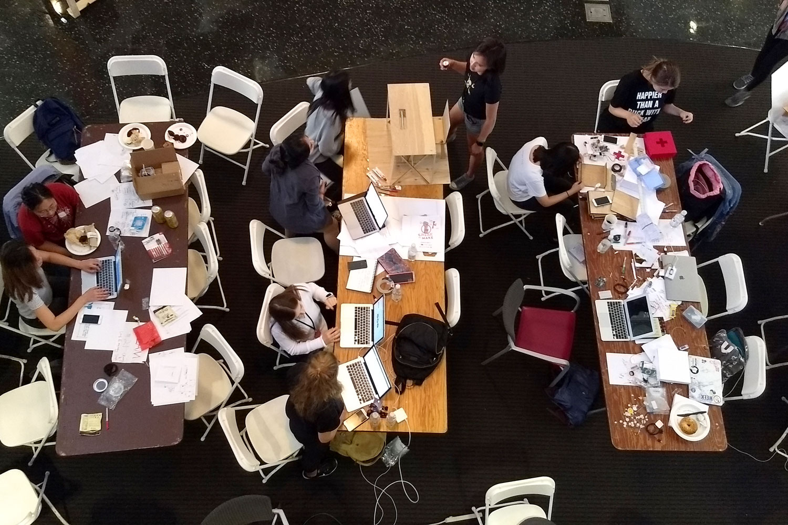
Graphics
From the start, I created & established the Break to Make brand in all internal & external communications.
Brand Development
Break to Make's development was focused around empowerment & inclusion. Below - our hero & landing page image, and logo.
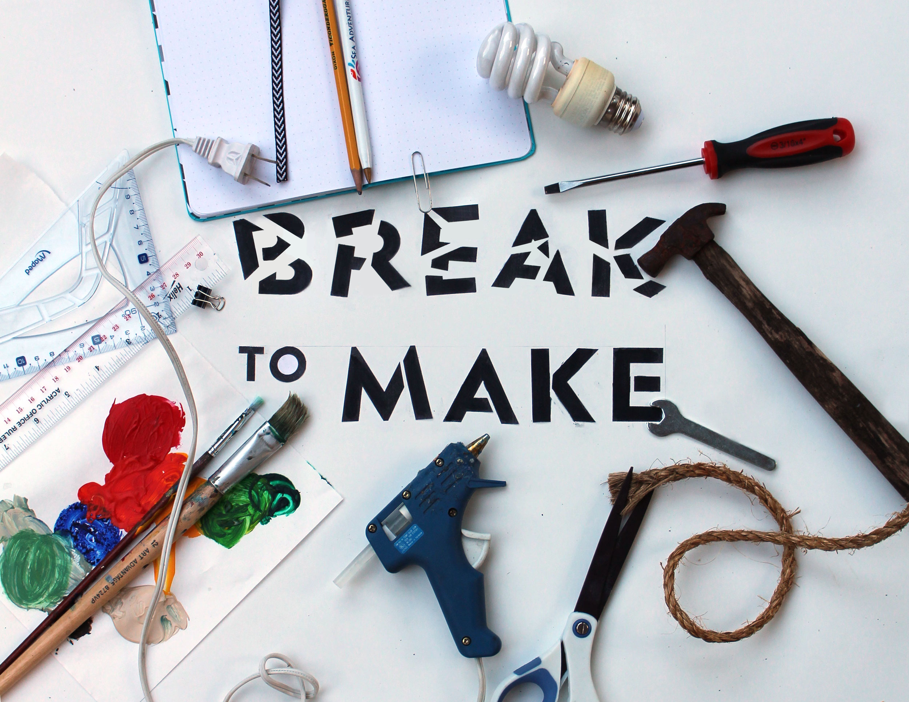
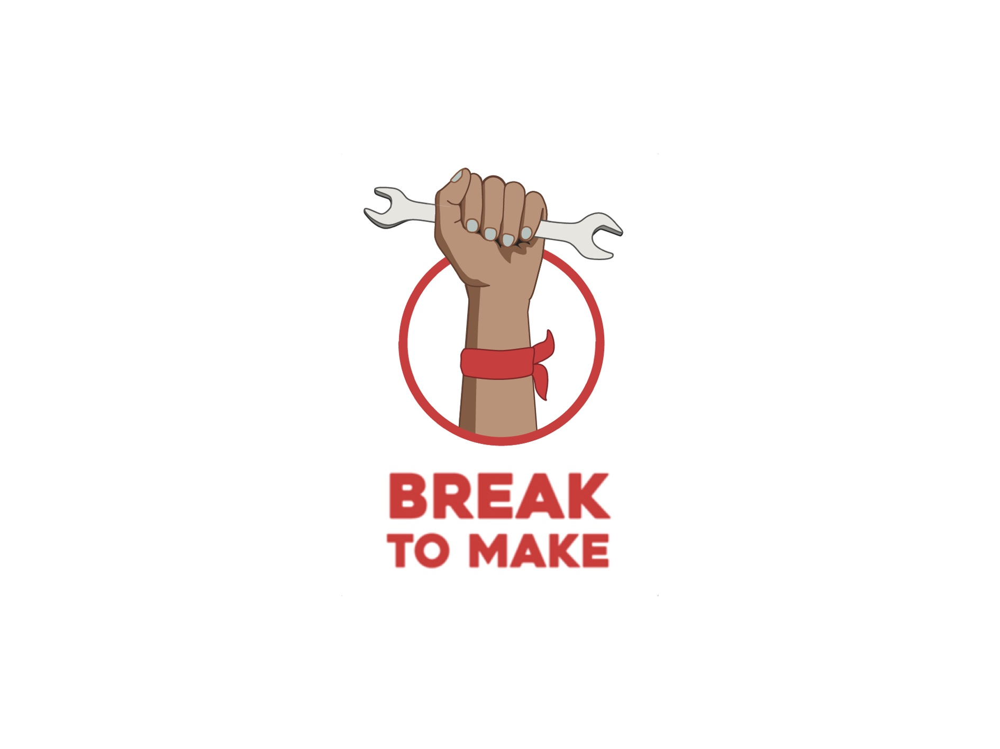
Website
I helped build and maintain the website, used to reach interested sponsors & potential participants. Find it here.
Information Deck
Used for outreach to sponsors
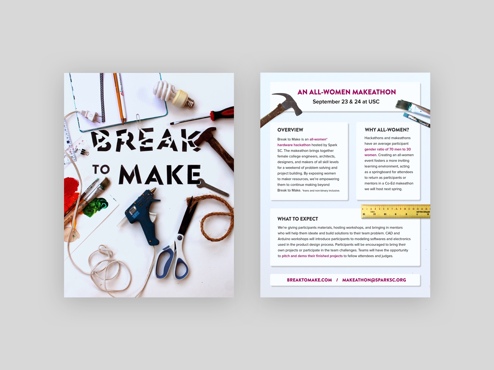
Marketing assets
Used to reach potential participants over Facebook & flyering around campus.
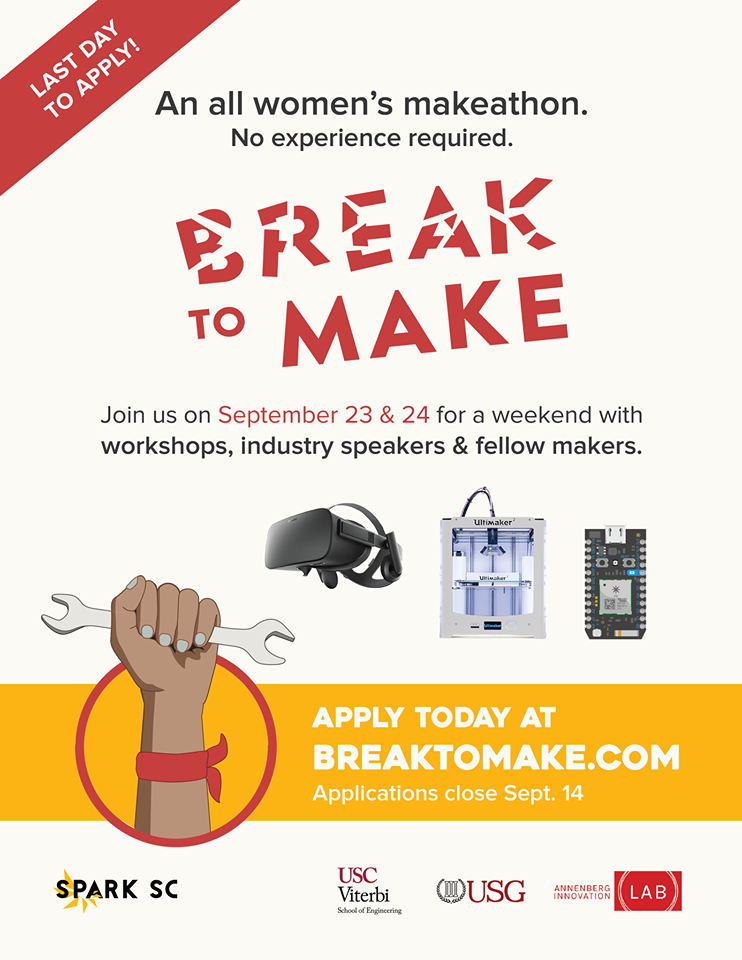
Press Release
Used after the event to follow up with sponsors. If you're curious, check out the full press release here.
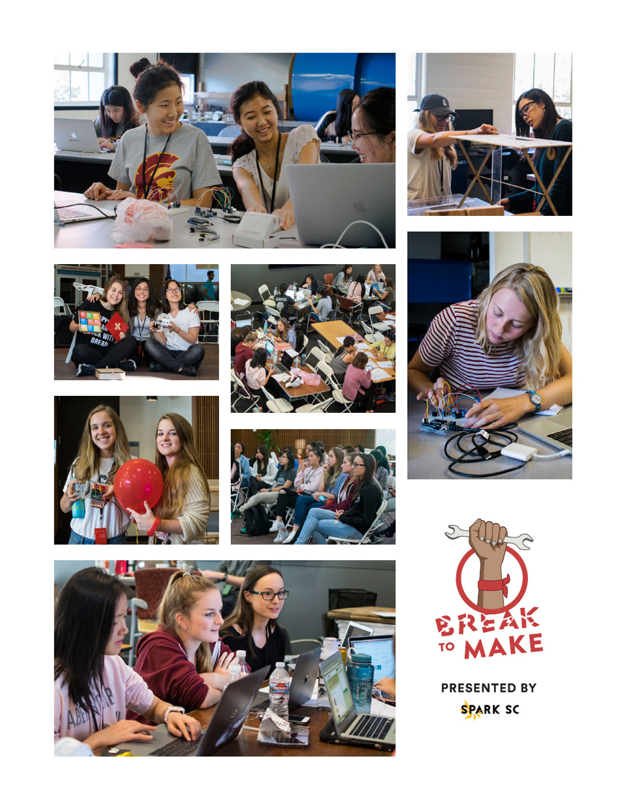
The Event
For this first year of the makeathon, a dozen teams of four came together at the Annenberg School for Communication and Journalism and the Department of Aerospace and Mechanical Engineering lab in Biegler Hall to design a solution to a challenge in one of four categories: food, water and shelter, communications, education, and open design. Many teams came with little experience in making, and by the end of the weekend had learned how to 3D print their first project or use an IoT board.
Workshops
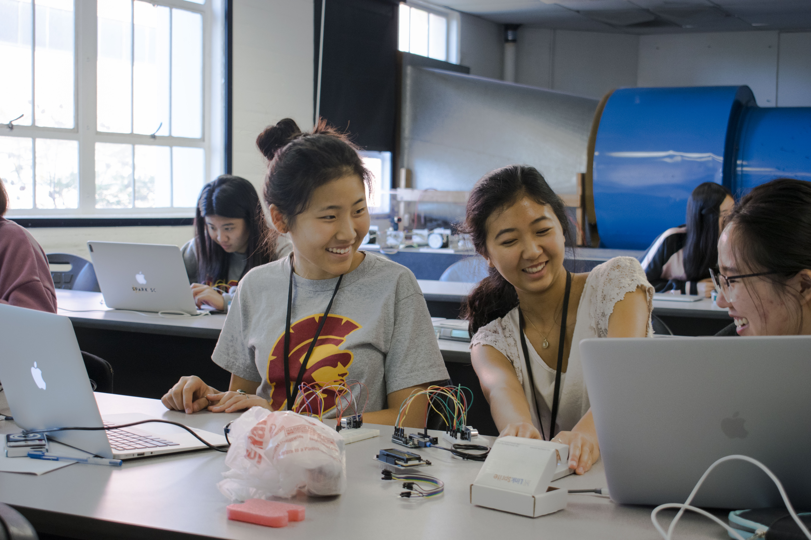
Projects
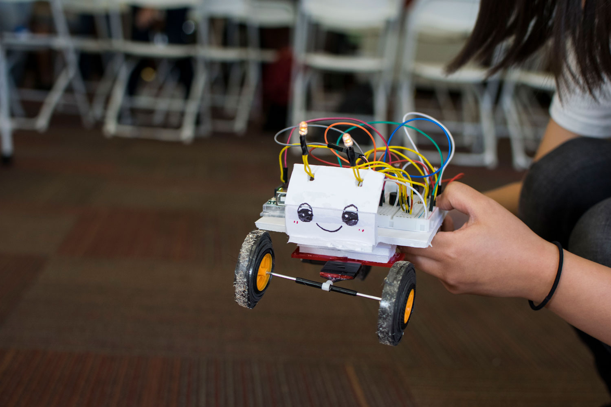
Judges & Winners
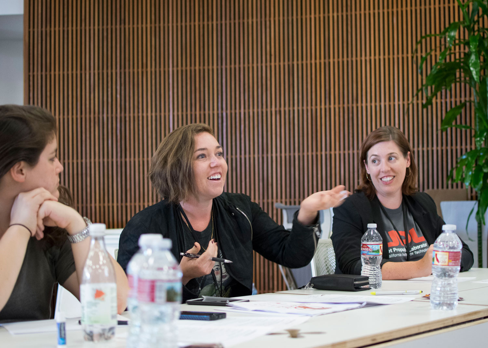
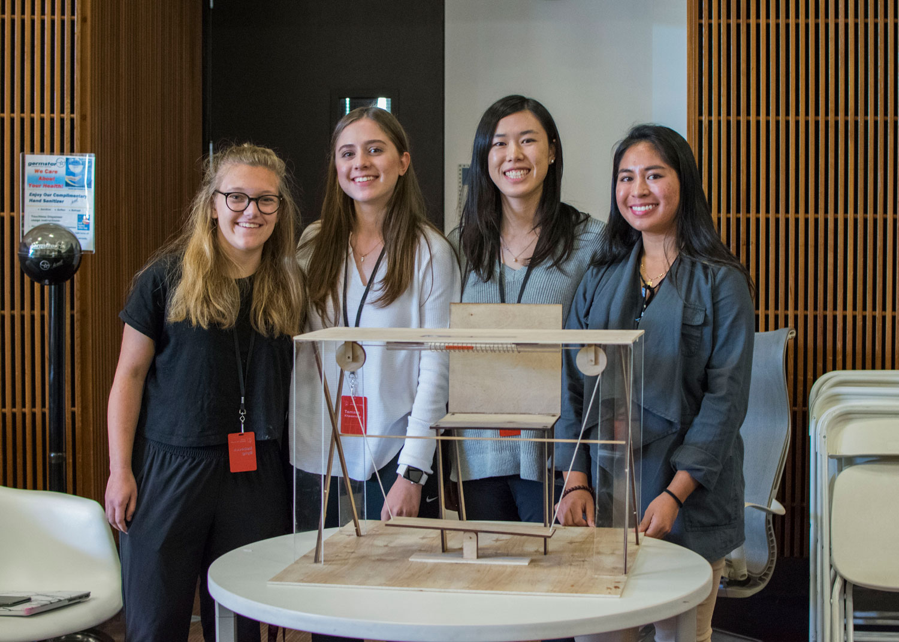
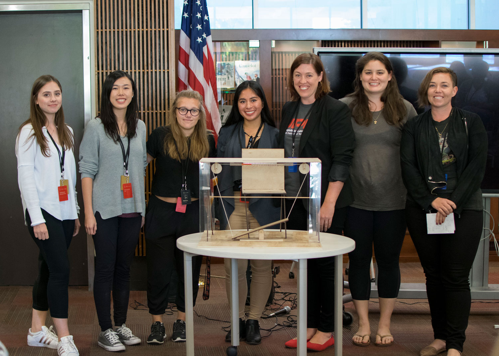
Organizing Team
This event would not have been possible without my team's hustle. From left to right below, huge thanks to Raghav Maheshwari, Priscilla Pan, LySandra Vuong, (that's me), Benjamin Stanfield, Irfan Faizullabhoy (not pictured) and Liam Maddox (not pictured).
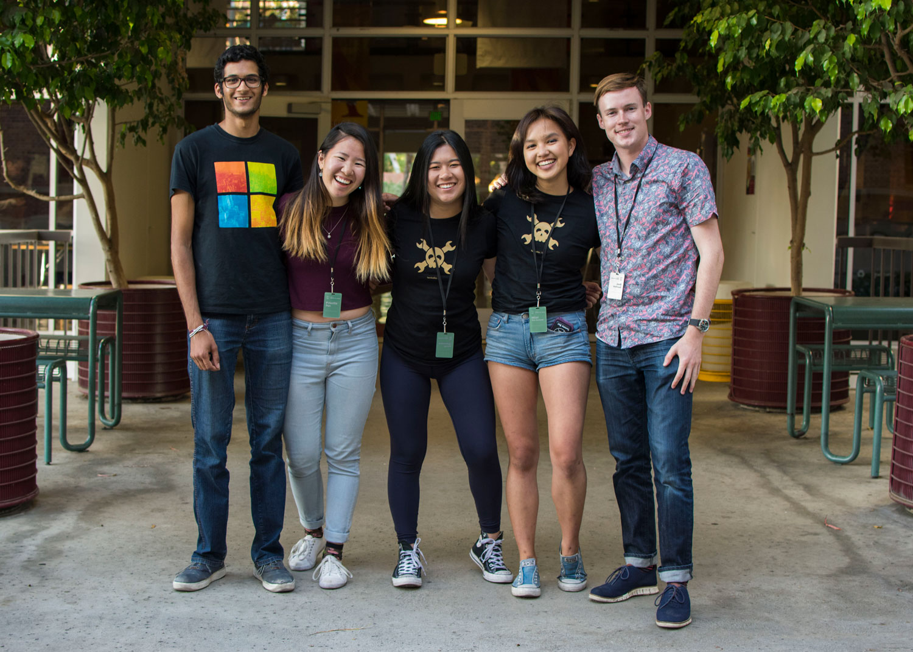
Press
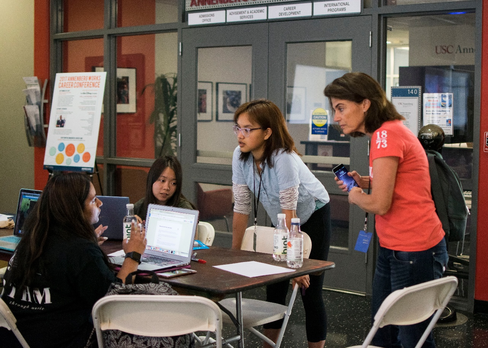
Community Post for Sparkfun
Sparkfun
by Mimi Tran Zambetti
My blog post as a Community Partner for Sparkfun on fostering diversity and inclusivity in the maker community, one makeathon at a time.
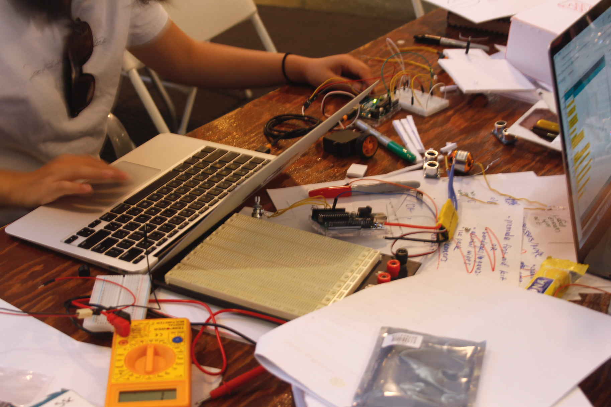
Spark SC hosts first all-woman makeathon
The Daily Trojan
by Erica Hur
Spark SC and the Annenberg Innovation Lab collaborated to host the event, “Break to Make,” in an effort to cultivate the talents of women in engineering at USC.
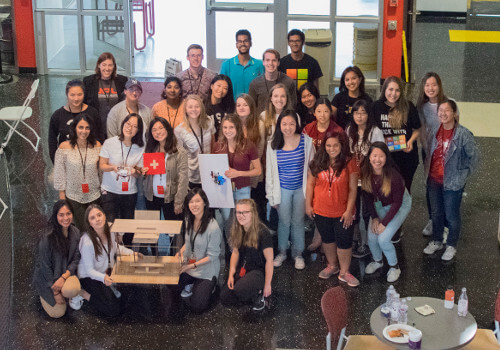
“Break to Make”
USC Viterbi
by Ashleen Knutsen
The winners of the University’s first all-woman makeathon.